Лабораторная работа № 4. MS Access. Создание запросов
Цель
занятия: изучить создание простого
запроса, создание запросов без помощи мастера простых запросов, дополнительные
возможности бланков запросов, просмотр результатов запроса, запросы с выводом наборов
значений, подведение итогов по записям, вычисление значений полей, перекрёстные
запросы и запросы на изменение.
Порядок
выполнения - на основе лекционного
материала и контекстной помощи MS Access
выполнить и описать порядок выполнения следующих пунктов задания:
1. Открыть БД, разработанную на
предыдущем занятии.
2. В таблице «Студенты» отработать основные приёмы
форматирования текста, приобретённые в ходе изучения MS Word. Особое
внимание обратить на невозможность восстановления удалённых записей и полей
после подтверждения своего решения кнопкой «Да».
3. Перейти на вкладку Запросы в окне БД и
выбрать создание запроса с помощью мастера, либо выбрать значение Запрос
из раскрывающегося списка Новый объект на панели инструментов.
4. Создать запрос «Оценки» в соответствии с образцом,
представленным на рис. 33.1, 33.2.
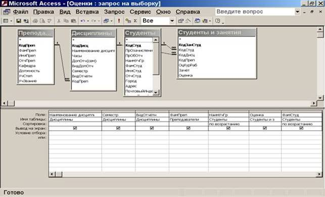
Рис. 33.1
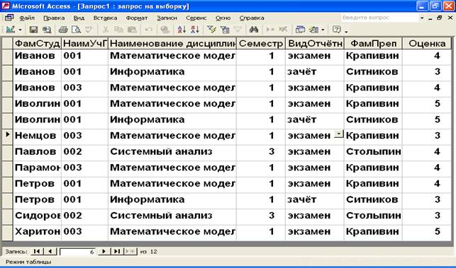
Рис. 33.2
1. В режиме конструктора преобразовать запрос таким
образом, чтобы записи были отсортированы по возрастанию номера учебной группы,
но чтобы поле учебной группы на экране отсутствовало.
2. Выполнить пп 4, 5 без помощи мастера (используя режим конструктор).
3. Вывести информацию о 25 % наиболее успевающих
студентов:
·
в режиме Конструктора
установить сортировку по полю «Оценка» по убыванию (рис. 33.3).
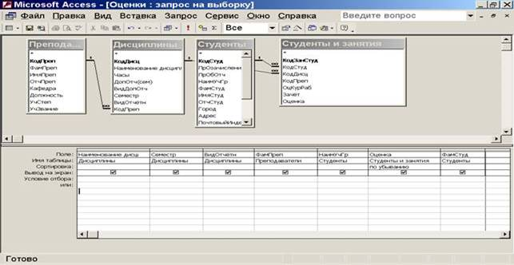
Рис. 33.3
·
изменить количество
отображаемых в запросе записей (в режиме конструктора, не находясь ни в одном
из полей, выполнить команды Вид – Свойства – строка Набор значений,
либо кнопка Набор значений на панели инструментов – рис. 33.4).
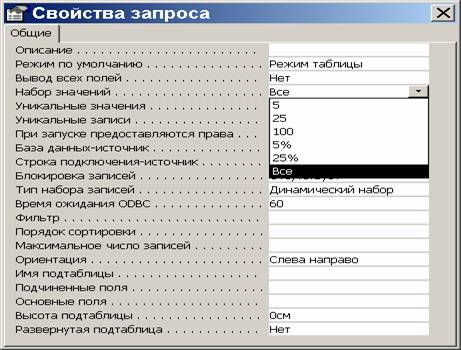
Рис. 33.4
После возвращения в режим таблицы получим результат,
представленный на рис. 33.5.
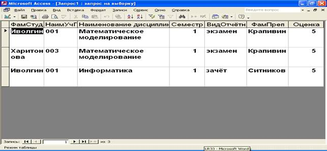
Рис. 33.5
4. С помощью функции групповая операция вычислить средний
балл каждой из групп по рассмотренным дисциплинам.
Примечание: для добавления строки Групповая операция в
бланк запроса, необходимо, находясь в режиме конструктора выполнить
команды Вид – Групповые операции или нажать кнопку Групповые операции на
панели инструментов. Пример параметров подобного запроса (режим конструктора)
приведён на рис. 33.6.
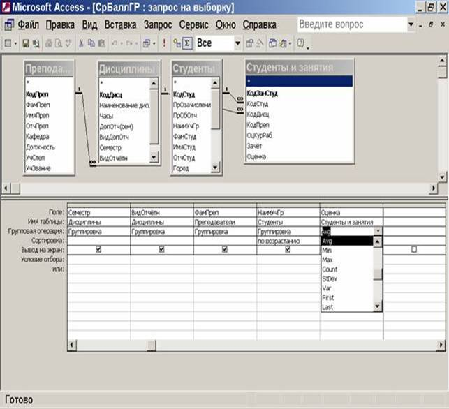
Рис. 33.6
Режим
таблицы этого же запроса представлен на рис. 33.7.
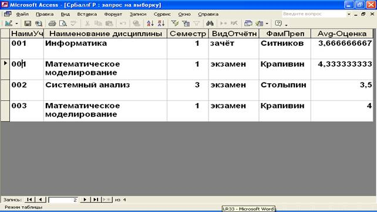
Рис. 33.7
5. Представим себе, что планируется повышение оплаты за
пользование общежитием с начала нового учебного года на 15 %. Чтобы выяснить, какова
будет величина новой оплаты ввести вычисляемое поле (рис. 33.8), а затем
подкорректировать его название (для выполнения этого задания необходимо, чтобы
таблица «Студенты» включала в себя поле «Оплата общежития ежемесячная»).
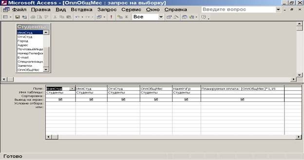
Рис. 33.8
Вид этого же запроса в режиме таблицы представлен на
рис. 33.9.
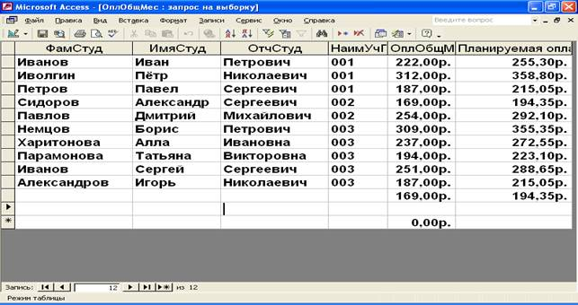
Рис. 33.9
6. Создать перекрёстный запрос с помощью мастера. На рис.
33.10 приведён пример такого запроса в режиме конструктора и его вид в
режиме таблицы (рис. 33.11).
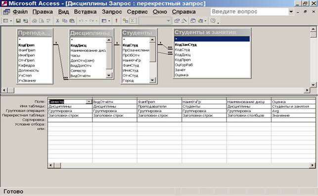
Рис. 33.10
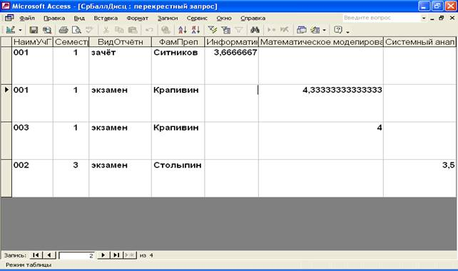
11. Запрос на создание таблицы. Для его организации необходимо (для учебных целей
использовать созданный ранее в п.4 запрос «Оценки»):
·
текущий запрос
перевести в режим конструктора;
·
на панели
инструментов Стандартная выбрать команду Запрос (либо нажать на
кнопку Тип запроса)и в открывшемся меню выбрать команду Создание
таблицы.
Полезен при создании резервных копий информации.
Таблица создаётся при каждом запуске запроса (данные существовавшей таблицы
замещаются новыми из базового запроса), поэтому запуску предшествует ряд
предупреждений:
§ запрос на создание таблицы приведёт к изменению данных
таблицы;
§ существующая таблица (в примере – таблица «Оценки1»)
будет удалена перед выполнением запроса;
§ в новую таблицу будет помещено следующее число
записей: 12.
Примечание: для возвращения запроса из режима создания таблицы в
режим выборки необходимо выбрать нужный запрос в окне БД однократным щелчком
левой кнопки мыши, выбрать режим Конструктор, затем выполнить команды
Запрос
– Выборка.
12. Запрос на добавление. Как и запрос на создание таблицы, копирует записи из
одной таблицы (или нескольких таблиц) в другое место. Этот вид запроса новых
таблиц не создаёт, а копирует отобранные записи в существующую таблицу. Для
изучения этого типа запросов выполнить следующие действия:
·
создать 2 копии
таблицы «Дисциплины» - «Дис1» и «Дис2»;
·
изменить в
таблице «Дис1» содержимое полей (прежде всего, названия дисциплин), например,
как показано на рис. 33.12.
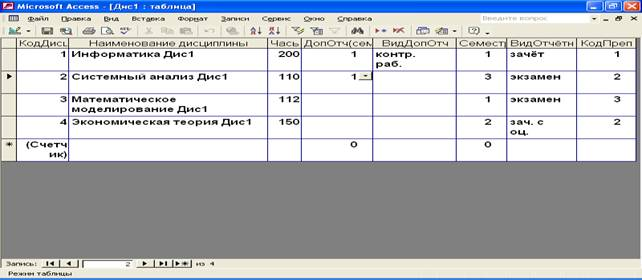
·
с помощью Мастера
создать запрос на основе таблицы «Дис1» (перенести все поля исходной таблицы,
за исключением поля КодДисц), как показано на рис. 33.13.
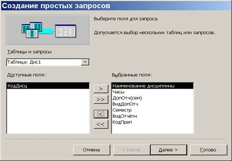
Рис. 33.13
·
перейти в режим конструктора,
выбрать тип – запрос на добавление и выбрать в качестве целевой таблицы (куда
будут добавляться записи из таблицы «Дис1») таблицу «Дис2» (рис. 33.14).
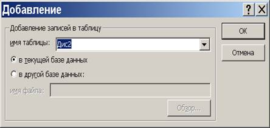
Рис. 33.14
·
после сохранения
запроса в памяти запустить его и убедиться в правильности добавления записей в
таблицу «Дис2» (рис. 33.15).
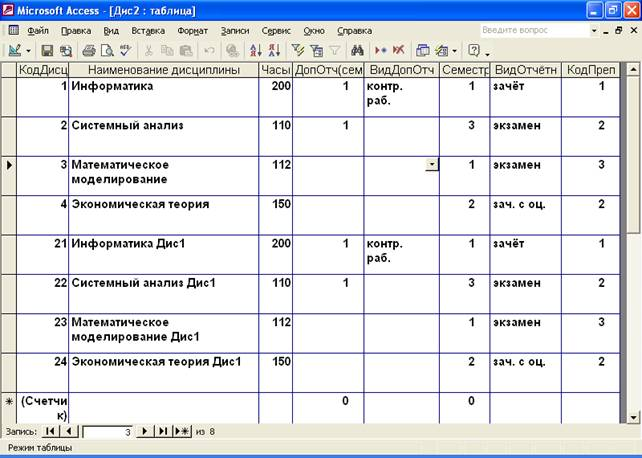
13. Запрос на обновление. Позволяет изменить значение любого поля БД для
записей, удовлетворяющих указанным критериям. При работе с запросом на
обновление Access добавляет
к бланку запроса строку Обновление. Она используется для
ввода выражений, определяющих способ изменения обновляемого поля.
Для
изучения этого типа запросов выполнить следующие действия:
·
создать копию
таблицы «Студенты» - «Студ1»;
·
создать новый
запрос с помощью Мастера (рис. 33.16) на основе таблицы «Студ1», выбрав одно
поле – «ОплОбщМес»;
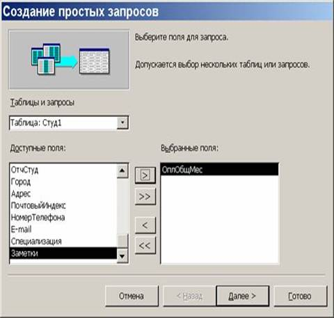
Рис. 33.16
·
по окончании
создания запроса перейти в режим конструктора, выбрать на панели
инструментов тип запроса Обновление и в появившейся строке Обновление
записать выражение [ОплОбщМес]*1,15 (рис. 33.17).
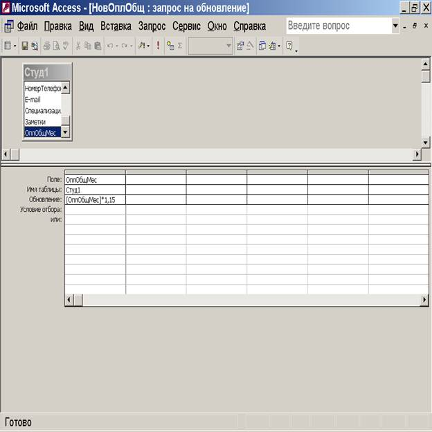
Рис. 33.17
·
после сохранения
изменений в структуре созданного запроса, запустить его на выполнение;
·
проверить
правильность обновления записей в поле «ОплОбщМес» таблицы «Студ1» (рис.
33.18).
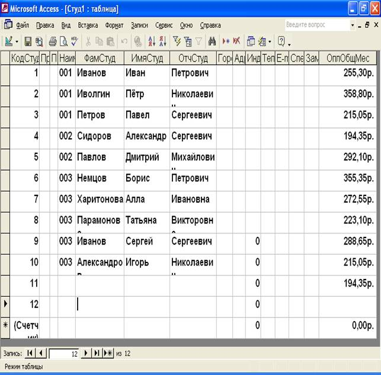
14. Запрос на удаление. Наиболее опасный тип запроса. Уничтожает в заданной таблице
(таблицах) все записи, отвечающие заданным критериям. В целях безопасности
перед выполнением запроса на удаление следует сначала провести запрос на
выборку, в котором условия используются только для отбора записей. Это позволит
просмотреть список удаляемых записей и убедиться в том, что из БД выбран
правильный набор данных. Только после этого следует переходить к запросу на
удаление и уничтожать записи.